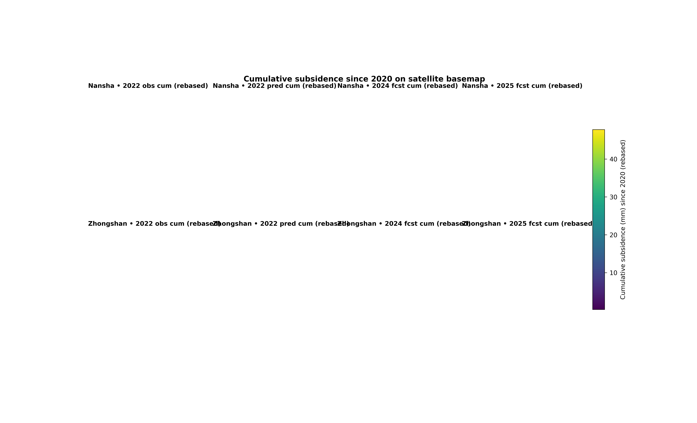

Note
Go to the end to download the full example code.
Cumulative subsidence on a satellite-style map#
This example teaches you how to read the GeoPrior cumulative subsidence map figure.
Many forecasting figures show either one year or one city at a time. This figure is more ambitious. It tries to answer a timeline question:
How does cumulative subsidence evolve from the validation year into the forecast years, and does that evolution look similar in both cities?
That is why this figure is useful. It combines:
observed cumulative subsidence,
predicted cumulative subsidence for the same year,
future cumulative forecast maps,
and an optional hotspot overlay.
What the figure shows#
The real plotting backend builds a layout with two rows and multiple columns.
Rows#
Nansha
Zhongshan
Columns#
observed cumulative map in
year_valpredicted cumulative map in
year_valforecast cumulative maps in the requested future years
So the eye reads from left to right:
observed -> predicted -> future
Why cumulative maps matter#
Incremental yearly maps can be useful, but cumulative maps answer a different decision-facing question:
Where has deformation accumulated the most since a baseline year?
That is often easier to communicate for risk planning, because it summarizes total burden rather than only year-to-year change.
The real script supports two input conventions:
already cumulative values, which are rebased at the first year at or after
start_year,or yearly increments/rates, which are accumulated.
It also auto-detects whether coordinates look like longitude / latitude or projected UTM coordinates, then converts them to web mercator for basemap display.
Imports#
We use the real plotting entrypoint from the project code. For gallery stability, we temporarily disable online tile fetching; the normal CLI workflow at the end uses the real basemap path.
from __future__ import annotations
import tempfile
from pathlib import Path
import contextily as cx
import matplotlib.image as mpimg
import matplotlib.pyplot as plt
import numpy as np
import pandas as pd
from geoprior._scripts.plot_geo_cumulative import (
plot_geo_cumulative_main,
)
Step 1 - Build two compact synthetic city datasets#
The real script expects:
one validation CSV per city
one future CSV per city
- Validation CSVs must contain:
sample_idx, coord_t, coord_x, coord_y, subsidence_actual, subsidence_q50
- Future CSVs must contain:
sample_idx, coord_t, coord_x, coord_y, subsidence_q50
We will create small lon/lat grids near the two cities. The values are already cumulative, so the script will rebase them at the first available year >= start_year.
def _make_city_frames(
city: str,
*,
lon0: float,
lat0: float,
amp: float,
drift_x: float,
drift_y: float,
seed: int,
) -> tuple[pd.DataFrame, pd.DataFrame]:
rng = np.random.default_rng(seed)
nx = 16
ny = 11
xs = np.linspace(lon0 - 0.055, lon0 + 0.055, nx)
ys = np.linspace(lat0 - 0.040, lat0 + 0.040, ny)
X, Y = np.meshgrid(xs, ys)
xn = (X - X.min()) / (X.max() - X.min())
yn = (Y - Y.min()) / (Y.max() - Y.min())
# One smooth cumulative hotspot with a weak directional trend.
bowl = np.exp(
-(
((xn - 0.62) ** 2) / 0.030
+ ((yn - 0.42) ** 2) / 0.045
)
)
structural = (
amp * bowl
+ drift_x * xn
+ drift_y * yn
)
sample_idx = np.arange(X.size, dtype=int)
coord_x = X.ravel()
coord_y = Y.ravel()
structural = structural.ravel()
years_val = [2020, 2021, 2022]
years_future = [2023, 2024, 2025]
val_rows: list[dict[str, float | int]] = []
fut_rows: list[dict[str, float | int]] = []
for yy in years_val:
mult = {2020: 0.0, 2021: 0.42, 2022: 0.88}[yy]
actual = (
mult * structural
+ rng.normal(0.0, 1.0, size=structural.size)
)
pred = (
0.97 * mult * structural
+ 0.35
+ rng.normal(0.0, 0.7, size=structural.size)
)
for i in range(structural.size):
val_rows.append(
{
"sample_idx": int(sample_idx[i]),
"coord_t": int(yy),
"coord_x": float(coord_x[i]),
"coord_y": float(coord_y[i]),
"subsidence_actual": float(actual[i]),
"subsidence_q50": float(pred[i]),
}
)
for yy in years_future:
mult = {2023: 1.10, 2024: 1.38, 2025: 1.72}[yy]
pred = (
mult * structural
+ 0.6 * np.sin(2.0 * np.pi * xn).ravel()
+ rng.normal(0.0, 0.8, size=structural.size)
)
for i in range(structural.size):
fut_rows.append(
{
"sample_idx": int(sample_idx[i]),
"coord_t": int(yy),
"coord_x": float(coord_x[i]),
"coord_y": float(coord_y[i]),
"subsidence_q50": float(pred[i]),
}
)
return (
pd.DataFrame(val_rows),
pd.DataFrame(fut_rows),
)
ns_val, ns_future = _make_city_frames(
"Nansha",
lon0=113.55,
lat0=22.70,
amp=42.0,
drift_x=8.0,
drift_y=4.0,
seed=10,
)
zh_val, zh_future = _make_city_frames(
"Zhongshan",
lon0=113.38,
lat0=22.52,
amp=34.0,
drift_x=5.0,
drift_y=7.0,
seed=22,
)
print("Validation rows")
print(f" Nansha: {len(ns_val)}")
print(f" Zhongshan: {len(zh_val)}")
print("")
print("Future rows")
print(f" Nansha: {len(ns_future)}")
print(f" Zhongshan: {len(zh_future)}")
Validation rows
Nansha: 528
Zhongshan: 528
Future rows
Nansha: 528
Zhongshan: 528
Step 2 - Build an optional hotspot overlay table#
The real script can overlay hotspot points on forecast panels. It expects city/year/kind together with coordinates.
Here we create a compact overlay by taking the top-valued future points for 2024 and 2025 in each city.
def _top_hotspots(
city: str,
fut_df: pd.DataFrame,
*,
years: list[int],
n_top: int,
) -> pd.DataFrame:
rows: list[pd.DataFrame] = []
for yy in years:
sub = fut_df.loc[fut_df["coord_t"].eq(yy)].copy()
sub = sub.nlargest(n_top, "subsidence_q50").copy()
sub["city"] = city
sub["year"] = int(yy)
sub["kind"] = "forecast"
sub["score"] = sub["subsidence_q50"]
rows.append(
sub[
[
"city",
"year",
"kind",
"coord_x",
"coord_y",
"score",
]
]
)
return pd.concat(rows, ignore_index=True)
hotspots = pd.concat(
[
_top_hotspots("Nansha", ns_future, years=[2024, 2025], n_top=8),
_top_hotspots(
"Zhongshan",
zh_future,
years=[2024, 2025],
n_top=8,
),
],
ignore_index=True,
)
print("")
print("Hotspot rows")
print(f" {len(hotspots)}")
Hotspot rows
32
Step 3 - Write the synthetic CSVs#
The real plotting script works from files, so we write the tables to a temporary directory exactly as a user workflow would.
tmp_dir = Path(
tempfile.mkdtemp(prefix="gp_sg_geo_cum_")
)
ns_val_csv = tmp_dir / "nansha_val.csv"
zh_val_csv = tmp_dir / "zhongshan_val.csv"
ns_future_csv = tmp_dir / "nansha_future.csv"
zh_future_csv = tmp_dir / "zhongshan_future.csv"
hotspot_csv = tmp_dir / "fig6_hotspots.csv"
ns_val.to_csv(ns_val_csv, index=False)
zh_val.to_csv(zh_val_csv, index=False)
ns_future.to_csv(ns_future_csv, index=False)
zh_future.to_csv(zh_future_csv, index=False)
hotspots.to_csv(hotspot_csv, index=False)
print("")
print("Written inputs:")
print(f" {ns_val_csv}")
print(f" {zh_val_csv}")
print(f" {ns_future_csv}")
print(f" {zh_future_csv}")
print(f" {hotspot_csv}")
Written inputs:
C:\Users\Daniel\AppData\Local\Temp\gp_sg_geo_cum_jqds7oh9\nansha_val.csv
C:\Users\Daniel\AppData\Local\Temp\gp_sg_geo_cum_jqds7oh9\zhongshan_val.csv
C:\Users\Daniel\AppData\Local\Temp\gp_sg_geo_cum_jqds7oh9\nansha_future.csv
C:\Users\Daniel\AppData\Local\Temp\gp_sg_geo_cum_jqds7oh9\zhongshan_future.csv
C:\Users\Daniel\AppData\Local\Temp\gp_sg_geo_cum_jqds7oh9\fig6_hotspots.csv
Step 4 - Run the real plotting command#
The real script fetches Esri satellite tiles through contextily. During documentation builds that can be fragile, so for this gallery lesson we temporarily replace the tile fetch with a no-op. The actual CLI workflow shown at the end still uses the normal basemap path.
out_base = tmp_dir / "geo_cumulative_gallery"
_add_basemap = cx.add_basemap
cx.add_basemap = lambda *args, **kwargs: None
try:
plot_geo_cumulative_main(
[
"--ns-val",
str(ns_val_csv),
"--zh-val",
str(zh_val_csv),
"--ns-future",
str(ns_future_csv),
"--zh-future",
str(zh_future_csv),
"--start-year",
"2020",
"--year-val",
"2022",
"--years-forecast",
"2024",
"2025",
"--subsidence-kind",
"cumulative",
"--clip",
"98",
"--cmap",
"viridis",
"--point-size",
"4.0",
"--point-alpha",
"0.95",
"--hotspot-csv",
str(hotspot_csv),
"--hotspot-field",
"score",
"--hotspot-size",
"18",
"--hotspot-alpha",
"0.95",
"--coords-mode",
"auto",
"--show-title",
"true",
"--show-panel-titles",
"true",
"--show-legend",
"true",
"--show-labels",
"true",
"--out",
str(out_base),
],
prog="plot-geo-cumulative",
)
finally:
cx.add_basemap = _add_basemap
[OK] wrote C:\Users\Daniel\AppData\Local\Temp\gp_sg_geo_cum_jqds7oh9\geo_cumulative_gallery (eps,pdf,png,svg)
Step 5 - Display the written figure in the gallery page#
The plotting command saves the figure and closes it, so we reload the PNG to show the actual output inside the gallery.
img = mpimg.imread(str(out_base) + ".png")
fig, ax = plt.subplots(figsize=(10.2, 6.2))
ax.imshow(img)
ax.axis("off")

(np.float64(-0.5), np.float64(6475.5), np.float64(3335.5), np.float64(-0.5))
Step 6 - Summarize the cumulative story numerically#
The picture is easier to interpret if we also summarize how the city-level cumulative median evolves from the validation year to the forecast years.
def _city_year_summary(
city: str,
val_df: pd.DataFrame,
fut_df: pd.DataFrame,
) -> pd.DataFrame:
# Rebase exactly like the plotting script:
# cumulative input -> subtract first available year per sample.
val = val_df.sort_values(["sample_idx", "coord_t"]).copy()
fut = fut_df.sort_values(["sample_idx", "coord_t"]).copy()
val["cum_actual"] = (
val["subsidence_actual"]
- val.groupby("sample_idx")["subsidence_actual"].transform("first")
)
val["cum_pred"] = (
val["subsidence_q50"]
- val.groupby("sample_idx")["subsidence_q50"].transform("first")
)
comb = pd.concat(
[
val[
[
"sample_idx",
"coord_t",
"coord_x",
"coord_y",
"subsidence_q50",
]
].copy(),
fut[
[
"sample_idx",
"coord_t",
"coord_x",
"coord_y",
"subsidence_q50",
]
].copy(),
],
ignore_index=True,
)
comb = comb.sort_values(["sample_idx", "coord_t"]).copy()
comb["cum_pred"] = (
comb["subsidence_q50"]
- comb.groupby("sample_idx")["subsidence_q50"].transform("first")
)
rows = []
# observed 2022
v22 = val.loc[val["coord_t"].eq(2022), "cum_actual"]
p22 = comb.loc[comb["coord_t"].eq(2022), "cum_pred"]
rows.append(
{
"city": city,
"panel": "2022 observed",
"median_cumulative": float(v22.median()),
}
)
rows.append(
{
"city": city,
"panel": "2022 predicted",
"median_cumulative": float(p22.median()),
}
)
for yy in [2024, 2025]:
py = comb.loc[comb["coord_t"].eq(yy), "cum_pred"]
rows.append(
{
"city": city,
"panel": f"{yy} forecast",
"median_cumulative": float(py.median()),
}
)
return pd.DataFrame(rows)
summary = pd.concat(
[
_city_year_summary("Nansha", ns_val, ns_future),
_city_year_summary("Zhongshan", zh_val, zh_future),
],
ignore_index=True,
)
print("")
print("Median cumulative subsidence by panel")
print(summary.round(2).to_string(index=False))
Median cumulative subsidence by panel
city panel median_cumulative
Nansha 2022 observed 7.32
Nansha 2022 predicted 6.79
Nansha 2024 forecast 10.68
Nansha 2025 forecast 13.49
Zhongshan 2022 observed 6.96
Zhongshan 2022 predicted 6.76
Zhongshan 2024 forecast 10.78
Zhongshan 2025 forecast 13.38
Step 7 - Learn how to read the columns#
This figure is easiest to read from left to right.
First column: observed cumulative map#
This panel tells you what cumulative subsidence actually looked like in the chosen validation year. It is the spatial reality check.
Second column: predicted cumulative map#
This is the model’s cumulative reconstruction for the same year. It answers:
“Did the model learn the broad geography of the cumulative signal?”
Forecast columns#
These panels extend the same cumulative logic into the future. Because the color scale is shared across the whole figure, the eye can compare intensification directly across years and across cities.
Step 8 - Learn why the baseline year matters#
The plotting script always interprets the map as “cumulative since start_year”.
That sounds small, but it changes the meaning of the figure.
- If the input data are already cumulative:
the script rebases them at the first available year.
- If the input data are increments or rates:
the script accumulates them.
The scientific meaning is therefore:
not “absolute deformation ever recorded”,
but “deformation accumulated since the baseline year used for this analysis”.
That makes start_year a real interpretation choice, not a cosmetic parameter.
Step 9 - Learn what the hotspot overlay adds#
The optional hotspot layer is only drawn on forecast panels in the real script. That is useful because it lets the reader see the highest-risk forecast zones without changing the underlying cumulative color field.
In this lesson we colored hotspots by a simple synthetic score, but the script also supports a fixed color overlay. Forecast hotspots are filtered by:
city
year
kind == “forecast”
before being projected to web mercator and drawn.
Step 10 - Practical takeaway#
This figure is especially good when you want a spatially intuitive story of accumulation through time.
It is useful for:
comparing validation-year realism against future evolution,
comparing the two cities side by side,
and highlighting where cumulative burden becomes spatially concentrated.
In other words, it is not only a forecast figure. It is a time-accumulation map lesson.
Command-line version#
The same figure can be produced from the command line.
The real script accepts:
--ns-valand--zh-valfor the validation CSVs,--ns-futureand--zh-futurefor the future CSVs,--start-yearand--year-val,--years-forecastfor the forecast columns,--subsidence-kindwithcumulative | increment | rate,--clipand--cmap,hotspot options such as
--hotspot-csv,--hotspot-field,--hotspot-color,--hotspot-size,CRS controls
--coords-modeand--utm-epsg,and the shared plot text/output options.
Legacy dispatcher:
python -m scripts plot-geo-cumulative \
--ns-val results/ns_val.csv \
--zh-val results/zh_val.csv \
--ns-future results/ns_future.csv \
--zh-future results/zh_future.csv \
--start-year 2020 \
--year-val 2022 \
--years-forecast 2024 2025 \
--subsidence-kind cumulative \
--clip 99 \
--cmap viridis \
--hotspot-csv fig6-hotspot-points.csv \
--hotspot-field delta \
--out spatial_satellite_cumulative
Modern CLI:
geoprior plot geo-cumulative \
--ns-val results/ns_val.csv \
--zh-val results/zh_val.csv \
--ns-future results/ns_future.csv \
--zh-future results/zh_future.csv \
--start-year 2020 \
--year-val 2022 \
--years-forecast 2024 2025 \
--out spatial_satellite_cumulative
The gallery page teaches the figure. The command line reproduces it in a workflow.
Total running time of the script: (0 minutes 31.299 seconds)